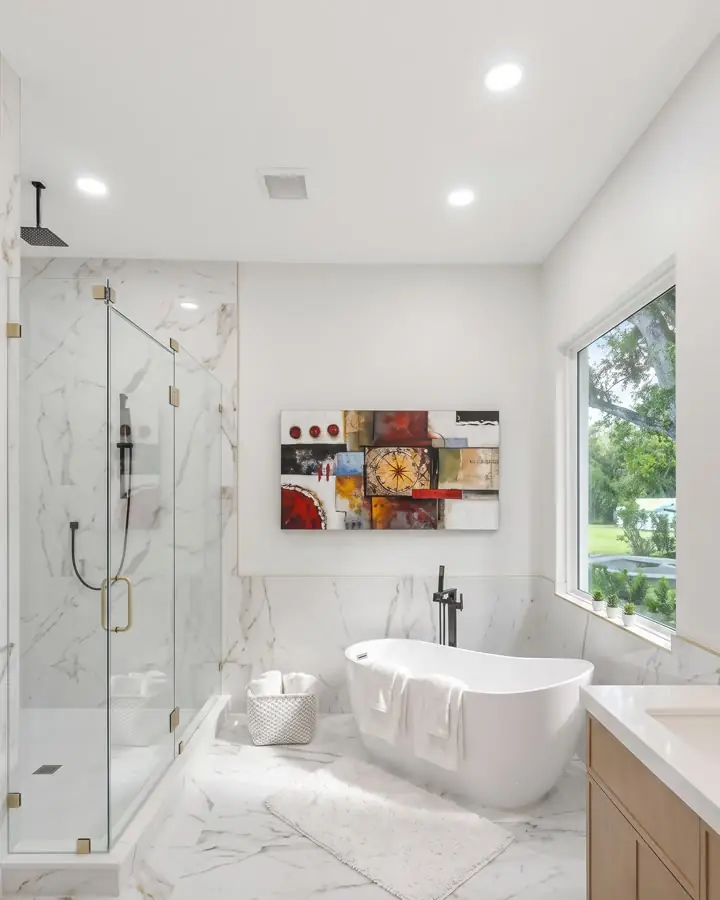
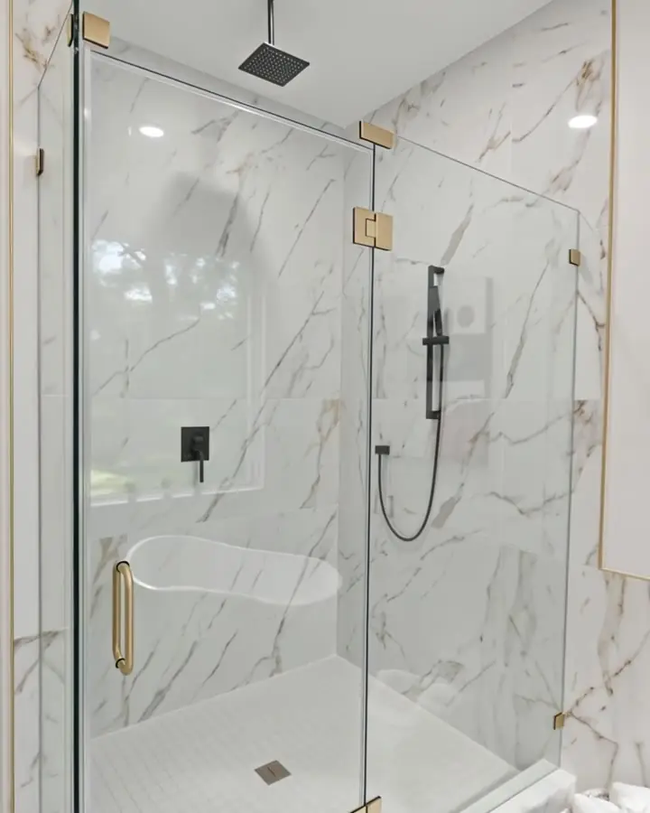
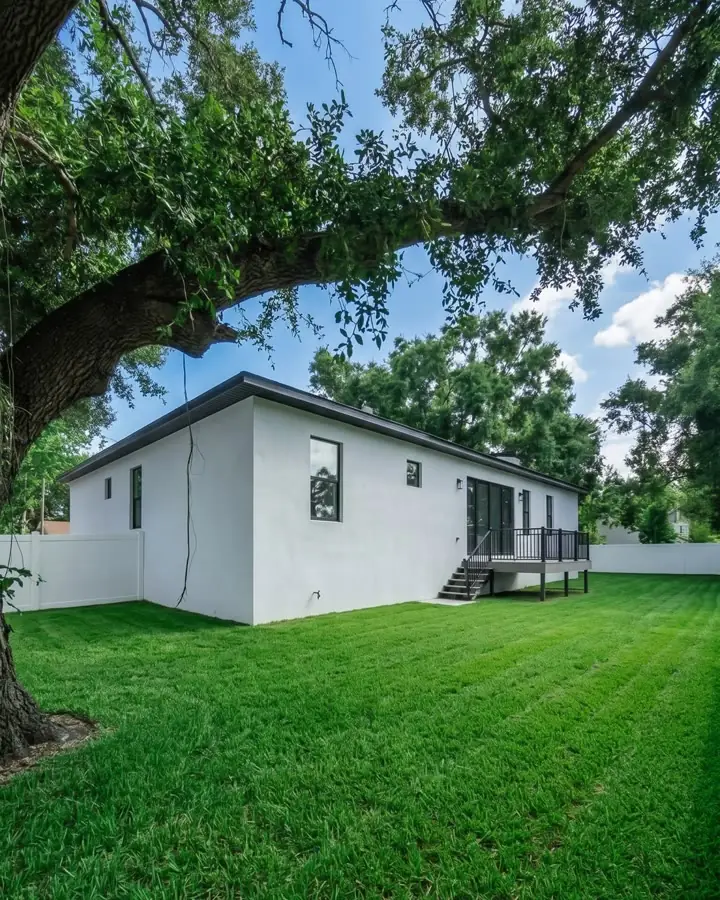
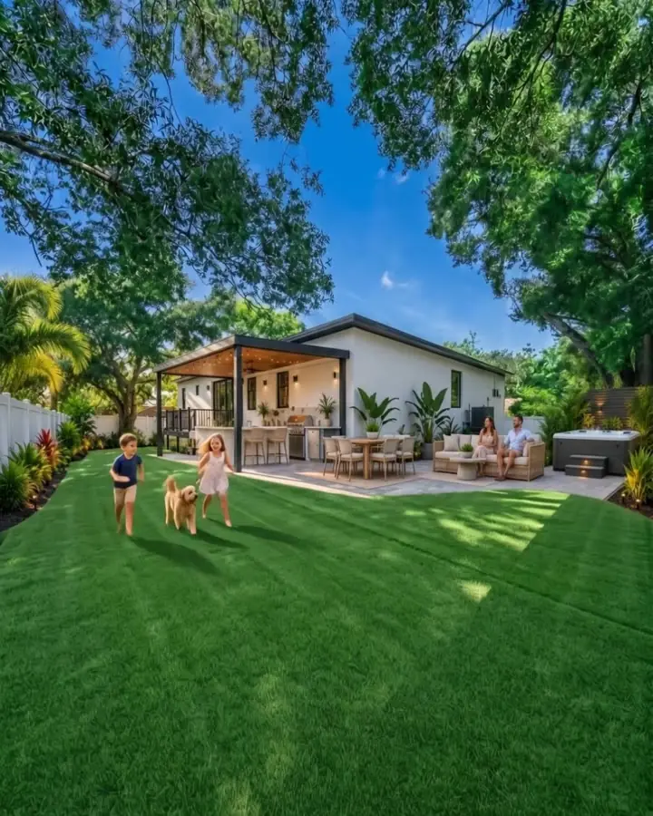
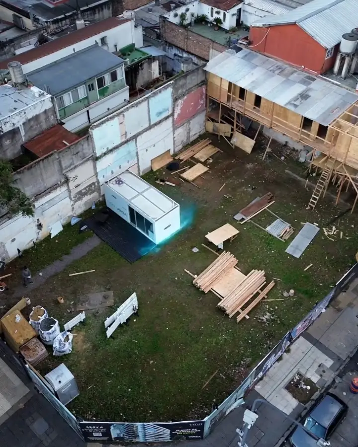
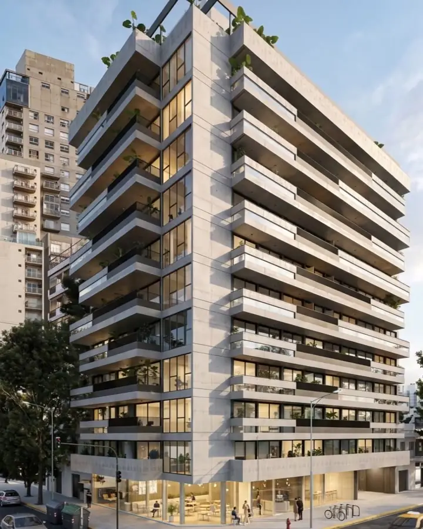

Cada corte, con intención.
Edito reels y videos para marcas que quieren verse serias. Y cuando algo sale mal en la grabación, lo resuelvo con IA.
“Tiene muy buen criterio y siempre trae ideas. Un 10 de 10.”
“Entendió mi estilo y lo que quiero comunicar.”
“Le importa realmente el resultado. Por eso lo seguimos eligiendo.”
“Le proponemos una idea y él nos trae alternativas y su mirada.”
Este es un clip crudo. Suma cada bloque de la postproducción y mira cómo se transforma, hasta quedar listo para publicar.

FOTO ORIGINAL
TOMA CON IA
PLANO A · ORIGINAL
PLANO B · CON IA
TERRENO REAL
EDIFICIO CON IAMás de 6 años editando.
Edito para inmobiliarias, gastronomía, marcas personales, bandas y empresas. Me envías el crudo, aunque venga del celular, y te devuelvo un video listo para publicar. Y si falta algo, lo resuelvo con IA.